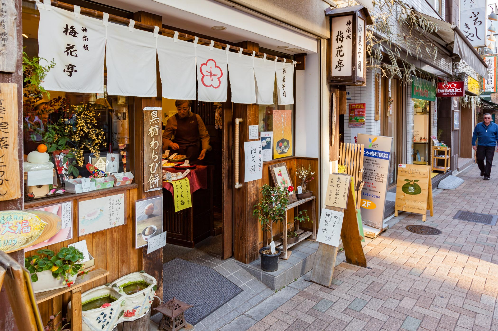
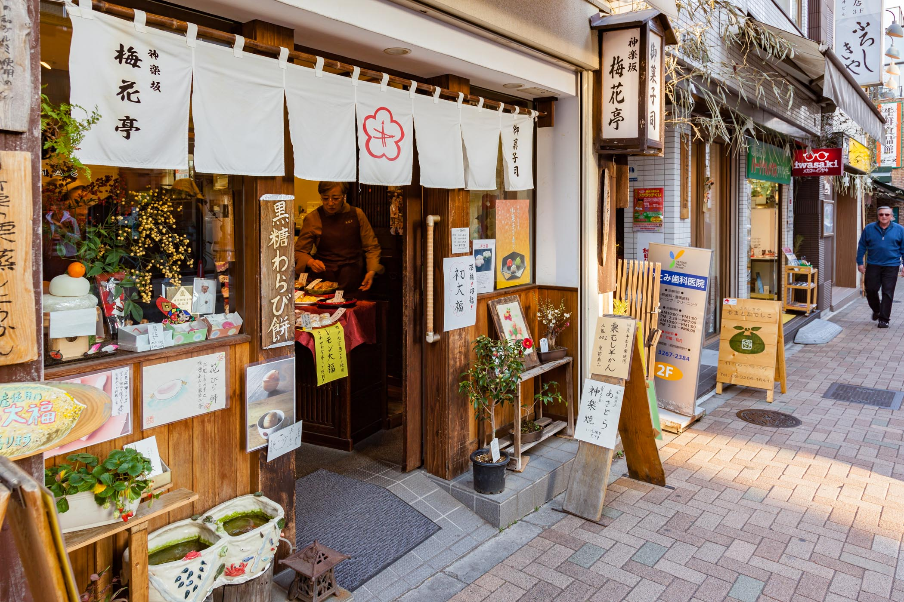

Shopping malls
Japan is a shopping paradise with a wealth of stores selling everything from traditional souvenirs and local food to the latest electronics and hottest fashion brands. Both domestic and foreign brands are represented, as are stores for all budgets, from the 100 yen shops to high-end fashion boutiques and department stores.
Large cities, such as Tokyo and Osaka, sport several shopping districts, each with their own unique character, usually grouped around major train stations. Shops are also found in shopping centers, along covered shopping arcades and in extensive underground malls. Outside of the city centers, large big box retailers, outlet malls and suburban shopping malls compete for shoppers with lots of variety.
Traditional bazars
Public markets are packed with vendors and restaurants selling all manner of fresh fish, vegetables, meat and prepared foods. Often serving both restaurants and the public, they tend to open and close earlier than other shopping districts, but are a fun way to explore the culinary side of Japan. Famous markets include Tokyo's Tsukiji Outer Market, Kyoto's Nishiki Market, Kanazawa's Omicho Market and Hakodate's Morning Market.
If flea markets are your thing, then Japan has some excellent ones that are worth checking out. Here you will find all types of new and used art, crafts, clothing, traditional goods, antiques, food, jewelry, tools and weapons. Some of the best are held at Kyoto's Toji Temple and Kitano Tenmangu Shrine, as well as at Tokyo's Meiji Jingu Gaien and Yoyogi Park.
 
